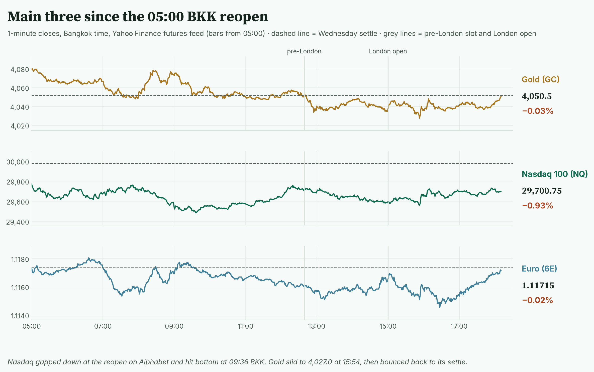
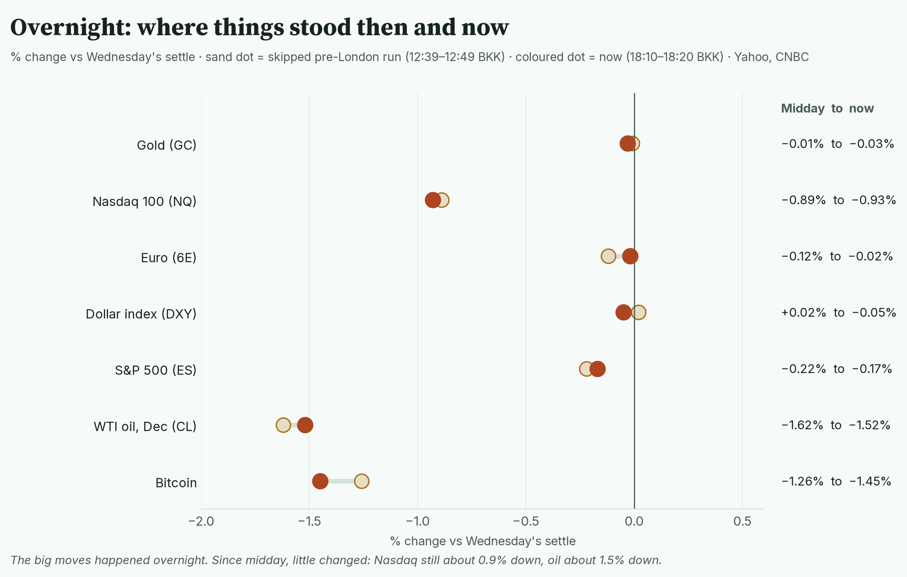
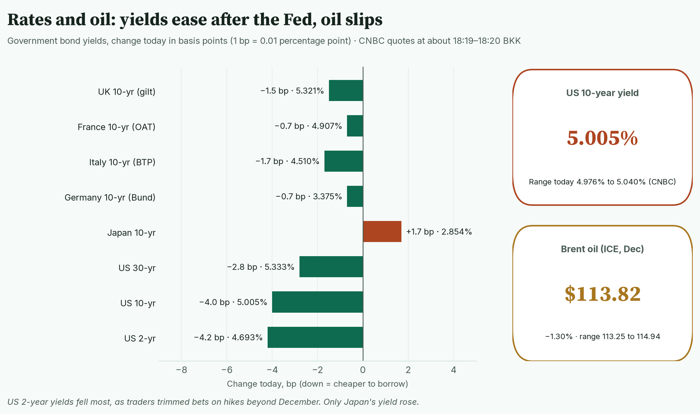
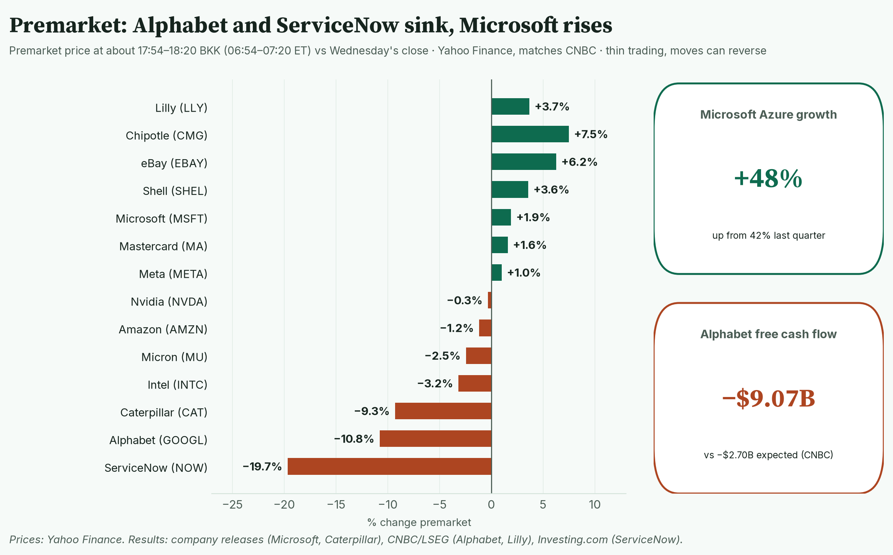
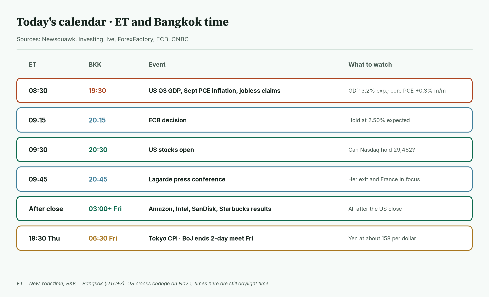
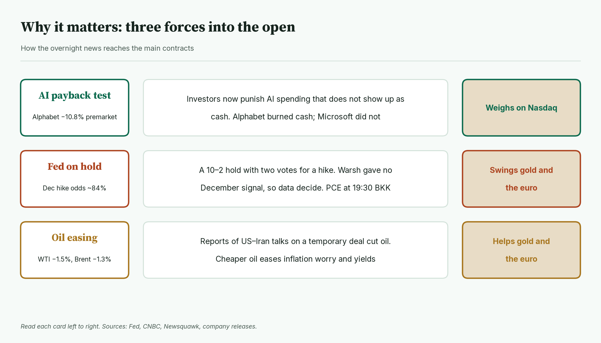
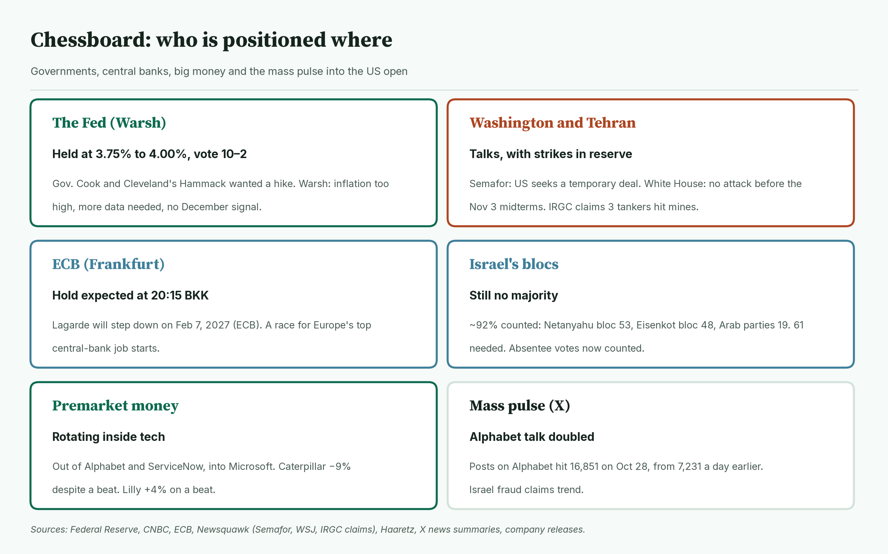
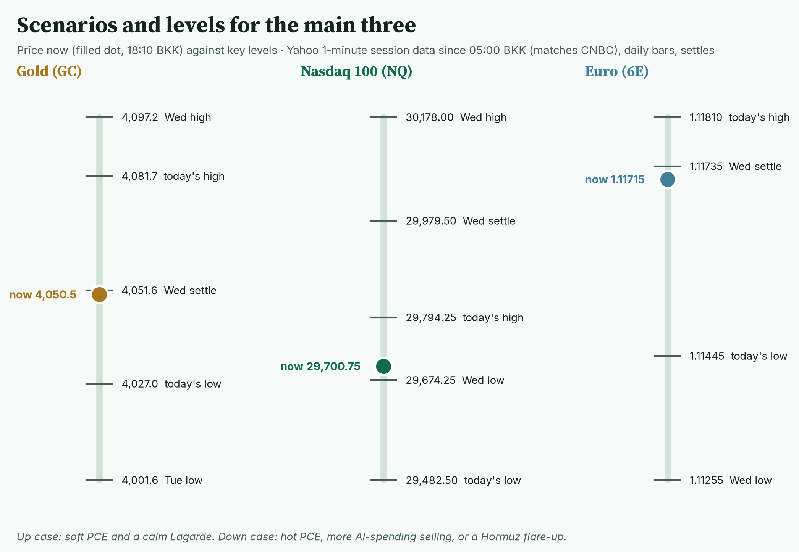
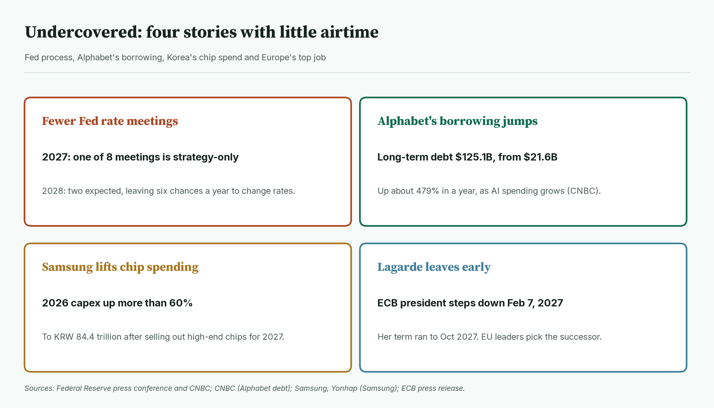
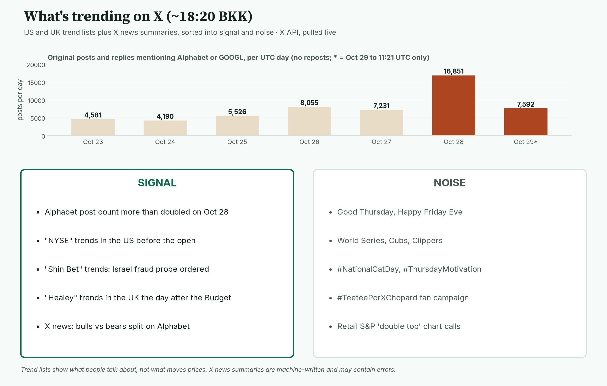

April · Market Intel, pre-NY · Thu Oct 29, 2026 · ~18:30 BKK / ~07:30 New York
Headline: Nasdaq futures are down 0.93% at 29,700.75 after Alphabet's results disappointed. Gold is flat at 4,050.5, −0.03%, after a dip to 4,027.0. The euro is flat at 1.11715, −0.02%.
So what: the Fed held rates and gave no December signal, so tonight's data decide. US inflation and growth figures land at 19:30 BKK, and the ECB at 20:15 BKK. This morning's pre-London brief was skipped, so this note covers everything since Wednesday's pre-NY brief.
1) Main instruments The three main contracts on 1-minute bars since the 05:00 BKK reopen. Nasdaq opened well below its settle; gold dipped mid-afternoon and recovered. |
(Futures trade nearly around the clock, so they show the mood before stocks open. Quotes: Yahoo Finance futures feed at 18:10 BKK (07:10 New York), about 10 minutes delayed; they match CNBC. Ranges: 1-minute bars from the 05:00 BKK reopen to 18:10 BKK; today's bars start at 05:00. CNBC's session highs and lows match.)
- Gold futures (GC, Dec): 4,050.5, −0.03%, at 18:08–18:10 BKK. Driver: a lift after Warsh's press conference faded overnight (Newsquawk). Cheaper oil and lower yields are now helping it back.
- Gold's range is 4,027.0 (15:54 BKK) to 4,081.7 (05:00 BKK).
- Re-checked: it broke Wednesday's low of 4,036.9 but held Tuesday's low of 4,001.6 (Yahoo daily bars). Spot gold (the cash price) is 4,035.61, −0.77%, with a low of 4,014.94 (CNBC, 18:20 BKK). It did not go back under $4,000.
- Nasdaq 100 futures (NQ, Dec): 29,700.75, −0.93%, at 18:10 BKK. Driver: Alphabet missed forecasts and burned cash on AI spending; its shares are down about 10.8% premarket (CNBC, Yahoo).
- Nasdaq's range is 29,482.50 (09:36 BKK) to 29,794.25 (05:01 BKK). It broke Wednesday's low of 29,674.25 and is now just back above it. Wednesday's high was 30,178.00, after it crossed 30,000.
- Euro futures (6E, Dec): 1.11715, −0.02%, at 18:10 BKK. Driver: the dollar gave back some of its post-Fed drop before the ECB decision (Newsquawk).
- The euro's range is 1.11445 (16:27 BKK) to 1.11810 (06:37 BKK). It held Wednesday's low of 1.11255.
- Spot euro is 1.1149 (CNBC, 18:20 BKK), range 1.1126 to 1.1161. The 2026 low is 1.1113, set on Wednesday (Yahoo daily bars). It has not broken that today.
- Takeaway: Nasdaq is the story; gold and the euro are waiting for the data.
Context. The dollar index (DXY, the dollar against six major currencies) is 102.14, −0.05% (CNBC, 18:20 BKK), range 102.06 to 102.33. The US 10-year yield (what the US government pays to borrow for 10 years) is 5.005%, down 4.0 basis points (CNBC, 18:19 BKK; a basis point is 0.01 percentage point), range 4.976% to 5.040%. The VIX (the "fear gauge" built from S&P 500 option prices) is 16.97, +0.35% versus Wednesday's 16.91 (CNBC, 18:20 BKK). US oil (CL, Dec) is 101.22, −1.52% (18:10 BKK), range 100.56 (16:06 BKK) to 102.31 (07:23 BKK). Brent (ICE, Dec) is 113.82, −1.30% (CNBC, 18:10 BKK), range 113.25 to 114.94 (CNBC; ICE trading, which opens at 08:00 BKK). NYMEX Brent (Jan, Yahoo) traded 109.56 (16:07 BKK) to 110.99 (07:23 BKK) since 05:00. S&P 500 futures (ES) are 7,770.00, −0.17% (18:10 BKK), range 7,740.00 (10:30 BKK) to 7,773.75 (12:19 BKK). Bitcoin is $80,087, −1.45% since 00:00 UTC (Yahoo, 18:20 BKK); it fell from about $81,290 to $79,590 overnight (Newsquawk).
2) Top signals: what happened overnight Each line runs from the skipped midday reading (12:39–12:49 BKK) to 18:10–18:20 BKK. The big moves came overnight; the afternoon was quiet. |
- The Fed held at 3.75% to 4.00%, by 10 votes to 2. Governor Lisa Cook and Cleveland Fed President Beth Hammack wanted a hike. (High: Fed statement)
- Warsh gave no December signal. He said inflation is too high and more data will decide. (High: Fed transcript, CNBC)
- Microsoft beat; Alphabet missed. Microsoft is up about 1.9% premarket, Alphabet down about 10.8%. (High: company release, CNBC)
- Oil fell on reports of US–Iran talks on a temporary deal. (Medium: Semafor via Newsquawk)
- Lagarde will leave the ECB on Feb 7, 2027. (High: ECB press release)
- Takeaway: AI spending is now judged on cash, and the Fed hands the next move to the data.
3) Rates, FX and oil Change in 10-year and other government yields today, CNBC at about 18:19–18:20 BKK. All fell except Japan's. |
- US 2-year 4.693%, −4.2 bp. 10-year 5.005%, −4.0 bp. 30-year 5.333%, −2.8 bp (CNBC, 18:20 BKK).
- Mentor: bond prices rise when yields fall. The 2-year tracks Fed expectations most closely, so its drop means slightly fewer expected hikes.
- Fed odds, re-checked: CME FedWatch (a tool that reads rate odds from futures prices) showed about 83.6% odds of a December hike around 06:00 ET / 17:00 BKK (CNBC). TradingKey put it at 83.52% after the meeting. Before the meeting it was about 86% to 88% (TradingKey, investingLive). A 78% figure seen in some reports could not be confirmed as a post-meeting reading, so it is left out. So December is still mostly priced for a hike.
- Warsh also changed the calendar. From 2027, one of eight meetings will be strategy-only, with no rate vote; in 2028, two (Fed, CNBC).
- Europe: Germany's 10-year is 3.375%, −0.7 bp; France 4.908%, −0.7 bp; UK gilt 5.321%, −1.5 bp a day after the Budget (CNBC).
- FX: the yen is 157.96 per dollar (CNBC, 18:20 BKK). The Bank of Japan began a two-day meeting today (Newsquawk).
- Oil: Semafor says the US is pursuing a temporary deal with Iran. The White House says it will not attack before the midterms and the blockade stays. Iran's Revolutionary Guard (IRGC) claims three tankers hit mines in the Strait of Hormuz; that is unconfirmed. (Medium: via Newsquawk)
- Takeaway: yields eased and the 10-year is back near 5.00%. Oil is lower but still high.
4) Premarket earnings Premarket moves at about 17:54–18:20 BKK versus Wednesday's close (Yahoo, matching CNBC). Software and Alphabet sell off; Microsoft and Lilly rise. |
- Alphabet: −10.8%. Revenue $127.58B, up 25%, versus $128.22B expected (LSEG via CNBC). Adjusted EPS (earnings per share) $2.67 versus $3.02 expected (LSEG via CNBC); reported EPS was $2.12, including an $8.7B investment loss (AP). Cloud revenue more than doubled to $30.7B. Search revenue rose 12% to $63.35B but missed forecasts near $65B. Free cash flow (cash left after spending) was −$9.07B. It kept its 2026 capex (spending on data centres and equipment) guide at $195B to $205B. (High: CNBC, AP, Yahoo Finance)
- Note: if Alphabet closes more than 9.77% lower, it is its worst post-earnings day ever; it listed in 2004 (CNBC).
- Microsoft: +1.9%. Revenue $92.3B, up 19%. Adjusted EPS $4.89 versus $4.73 expected (LSEG via CNBC); reported EPS $4.92, up 32%. Azure cloud growth sped up to 48% from 42%. It guides 49% to 50% next quarter. Capex was $45.2B, below the $50.67B expected; free cash flow stayed positive at $18.63B. (High: Microsoft release, earnings call, CNBC)
- ServiceNow: −19.7%. Adjusted EPS $1.00 versus $1.02 expected. Fourth-quarter subscription revenue guide $4.245B to $4.255B, versus about $4.36B expected. (High: CNBC, Investing.com)
- Caterpillar: −9.3% despite a beat. Revenue $20.7B, up 17%. Adjusted EPS $7.20, versus $7.10 expected. Power-generation sales rose 30%, mostly for data centres. (High: company release; estimate from Investing.com)
- Eli Lilly: +3.7%. Revenue $24.40B versus $22.61B expected. Adjusted EPS $7.48 versus $6.26. It raised its 2026 revenue guide to $91B to $92B from $85B to $87B. (High: CNBC/LSEG)
- Shell: +3.6% after an adjusted profit beat and a $5B buyback. Mastercard +1.6%, Chipotle +7.5%, eBay +6.2% (Yahoo prices; Shell details via Newsquawk). Results for Mastercard, Chipotle and eBay not checked here.
- Takeaway: investors reward AI spending that pays (Microsoft) and punish spending that eats cash (Alphabet).
5) US calendar today (ET and BKK) Thursday's schedule in New York and Bangkok time. Inflation data and the ECB come within 45 minutes. |
- 08:30 ET / 19:30 BKK: US Q3 GDP, September PCE inflation, personal income and jobless claims (Newsquawk). GDP is expected at 3.2% a year (annual pace). Core PCE (the Fed's favourite inflation gauge, without food and energy) is seen at +0.3% on the month and 3.1% on the year. Claims are seen at 198,000 (investingLive).
- 09:15 ET / 20:15 BKK: ECB decision. A hold with the deposit rate at 2.50% is expected (Newsquawk).
- 09:30 ET / 20:30 BKK: US stocks open.
- 09:45 ET / 20:45 BKK: Lagarde press conference (ForexFactory timing). Her exit and France's debt will feature.
- After the US close (from about 03:00 Fri BKK): Amazon, Intel, SanDisk and Starbucks report (TipRanks, Earnings Whispers).
- 19:30 ET / 06:30 Fri BKK: Tokyo CPI; the Bank of Japan ends its two-day meeting on Friday (BoJ calendar).
- Takeaway: 19:30 BKK decides the night. A hot PCE helps the dollar and hurts gold and the euro.
6) Why it matters Three forces and how each reaches the main contracts. |
- The AI payback test weighs on Nasdaq. Alphabet spent more than it earned in cash. Microsoft did not.
- The Fed hold leaves gold and the euro exposed to data. Odds of a December hike are still about 84%.
- Cheaper oil helps gold and the euro. It eases inflation worry and pulls yields down.
- Takeaway: soft inflation data would help all three; hot data would hurt gold and the euro most.
7) Chessboard Six players into the US open. Data and Big Tech move Nasdaq; the Gulf can move gold fastest. |
- The Fed: held, 10–2. Warsh says the economy is "expanding at a strong pace" but inflation is "elevated". Cook had not dissented since joining in 2022 (CNBC). (High)
- Washington and Tehran: talks on a temporary deal, per Semafor. Vice President Vance reached out to an Iranian hard-liner (WSJ). The US is ready to strike after the midterms if talks fail. (Medium: via Newsquawk)
- ECB: hold expected. Lagarde leaves Feb 7, 2027. EU leaders will pick a successor. (High: ECB)
- Israel: with about 92% of votes counted, Netanyahu's bloc has 53 seats, Eisenkot's bloc 48, and the Arab-led parties 19. A majority needs 61. Absentee votes are now being counted. (High: Haaretz) The elections committee chair asked the Shin Bet (Israel's security service) to probe claims of foreign funding (High: Jerusalem Post, Calcalist); a senior police official told Haaretz there is no evidence of fraud. (High: Haaretz)
- Premarket money: out of Alphabet and ServiceNow, into Microsoft and Lilly (premarket prices; who is trading is not known). (High for the moves)
- Mass pulse: X posts on Alphabet more than doubled to 16,851 on Oct 28 (X post counts).
- Takeaway: the data is scheduled risk; the Gulf is unscheduled risk.
8) Scenarios and levels Price now against today's key levels. Gold sits at its settle; Nasdaq is just above Wednesday's low. |
- Up case: soft PCE and a calm Lagarde. Gold clears 4,081.7, then Wednesday's high of 4,097.2. Nasdaq retakes 29,794.25, then the 29,979.50 settle. The euro clears 1.11810.
- Down case: hot PCE, more selling in AI names, or a Hormuz flare-up. Gold loses 4,027.0; Tuesday's low of 4,001.6 and $4,000 are next. Nasdaq loses 29,674.25, then 29,482.50. The euro loses 1.11445, then 1.11255; spot's 2026 low is 1.1113.
- Takeaway: 4,027.0 for gold and 29,482.50 for Nasdaq are the lines that matter. This is a framework, not a forecast.
9) Undercovered Four stories with little airtime: Fed process, Alphabet's debt, Korea's chip spending and Europe's top job. |
- Fewer Fed rate meetings. One of eight 2027 meetings will be strategy-only, and Warsh expects two in 2028, leaving six chances a year to move rates. (High: Fed transcript, CNBC)
- Alphabet's borrowing jumped. Long-term debt is $125.1B, up from $21.6B a year ago. (High: CNBC)
- Samsung lifts chip spending. It plans to raise 2026 capex by more than 60% to KRW 84.4 trillion, after saying its 2027 HBM (high-end AI memory) supply is sold out. Its shares fell 4.1% as investors were disappointed on shareholder returns. (High: Samsung call via Asia Business Daily, Seoul Economic Daily, Yonhap)
- Lagarde leaves early. Her term was due to run to late 2027. (High: ECB)
10) What's trending on X (~18:20 BKK) Daily posts mentioning Alphabet, plus today's trends sorted into signal and noise. Posts rose from 7,231 on Oct 27 to 16,851 on Oct 28. |
- US: Good Thursday, World Series, #NationalCatDay, Shin Bet, NYSE, Cubs.
- UK: Healey, Martin Lewis, Gambling, #bbcbreakfast, Sam Fender.
- Signal: Alphabet dominates X finance stories. Bears warn about search losing to chatbots; bulls call it a discount on cloud growth. (Medium: X news summaries)
- Signal: "Shin Bet" trends on Israel's fraud probe. Police say there is no evidence so far (Haaretz).
- Data point: original posts and replies on Alphabet or GOOGL went from 7,231 on Oct 27 to 16,851 on Oct 28, and 7,592 so far today (X post counts, UTC days).
- Noise: retail S&P 500 "double top" chart calls; treat as opinion.
- Noise: sports, cat day, fan campaigns.
Bottom line
Big Tech split, the Fed punted to the data, and oil eased. For Jim: gold at 4,050.5 is back at its settle after breaking Wednesday's low; 4,027.0 is the floor, 4,081.7 the ceiling. Nasdaq at 29,700.75 needs 29,794.25; 29,482.50 is the floor. The euro at 1.11715 sits near the top of today's range; 1.11445 and 1.11810 are the edges, with the ECB at 20:15 BKK. Interpretive note: PCE is mostly predictable from earlier CPI data, so a big surprise is less likely. A surprise either way would still move gold and the euro first. That is a read, not a forecast.
Confidence: Futures levels: high for direction, medium-high for the exact tick (Yahoo feed, about 10 minutes delayed; ranges match CNBC). Yields, spot gold, spot euro, Brent, DXY, VIX: CNBC, time-stamped. Fed decision: Fed statement and transcript. Fed odds: CNBC/CME at about 17:00 BKK and TradingKey after the meeting; not re-read directly from CME. Microsoft and Caterpillar: company releases. Alphabet, Microsoft and Lilly estimates: CNBC/LSEG; Alphabet also AP. ServiceNow: CNBC, Investing.com. Iran talks and tanker claims: Semafor, WSJ and IRGC via Newsquawk; unconfirmed. Israel: partial count via Haaretz, not final. Calendar: Newsquawk, investingLive, ForexFactory. |